| Selector type | Navigation |
|---|---|
| Dropdown menu (single select) |
Select a single item, such as your setting of interest. 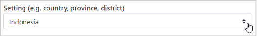 Click the box to see all the available settings and make your selection. 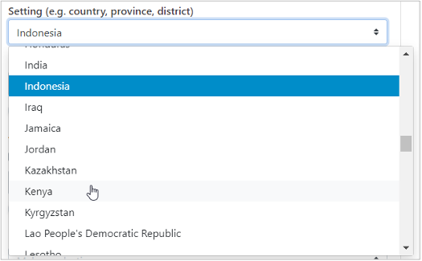 Alternatively, replace an already chosen setting by clicking the box and typing (part of) the name of the setting you are looking for. 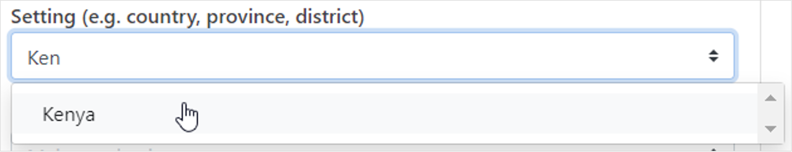 |
| Dropdown menu (multi-select) |
Select one or more items, such as your indicator(s) of interest. 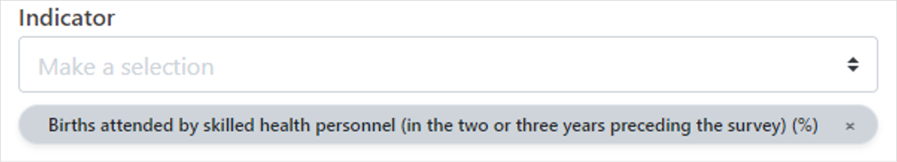 Click the box to see all the available indicators and make your selection. 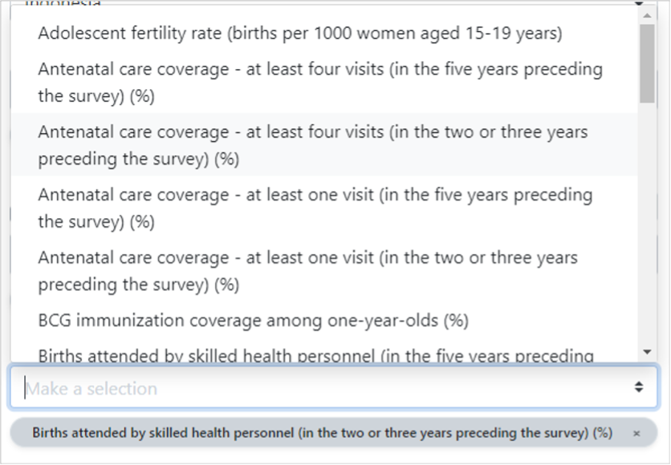 Alternatively, search for a specific indicator by typing (part of) the name of the indicator you are looking for and make your selection. 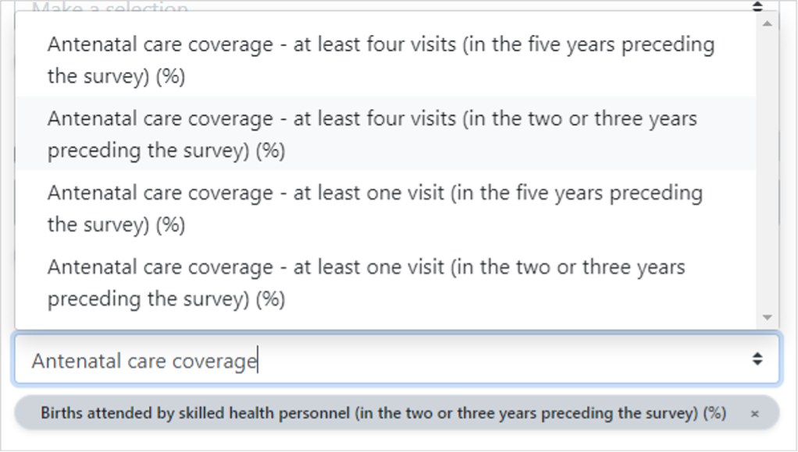 Remove selected indicators, by clicking on the indicator name. 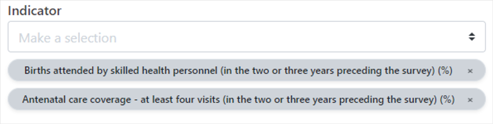 Note that often there is a limit to the number of items that you can display in the visual. For example, in most graphs, you can only show up to five indicators simultaneously. Once you have selected the maximum number of items, the selector will become grey and irresponsive. To make further changes, first remove selected items and then continue add new ones. 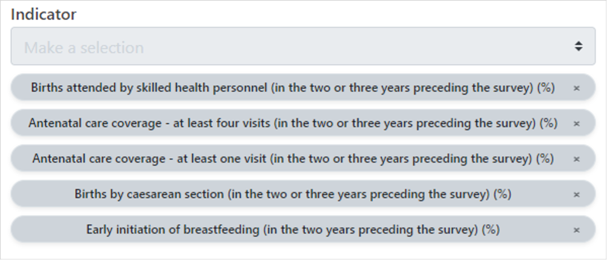 |
| Numeric input | Enter numeric values, e.g. the axis minimum and maximum. 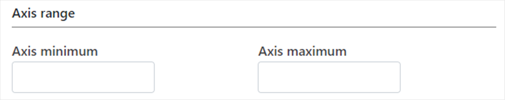 Click inside the box and enter a number. 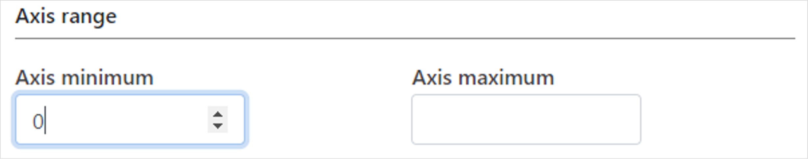 Alternatively, use the arrows to select a number. 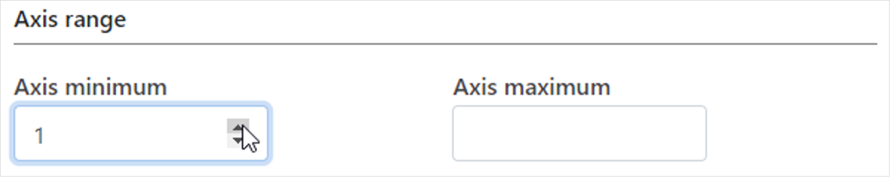 |
| Text input (empty) |
Enter information, such as horizontal and vertical axis titles.  Click inside the box and enter your text. 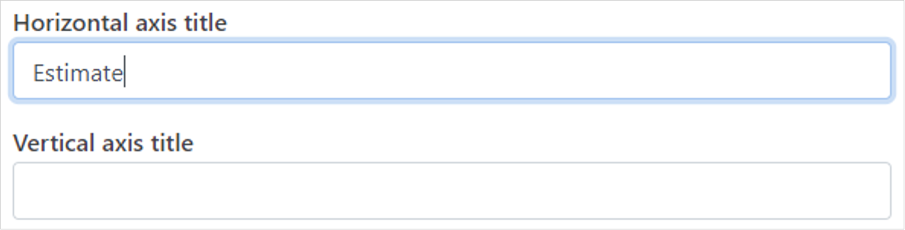 |
| Text input (pre-filled) |
Modify existing information, such as the main title (by default, the main title includes information about the setting, data source(s) and year(s) displayed in the visual) Click inside the box and delete, alter or replace the main title with the text of your choice. 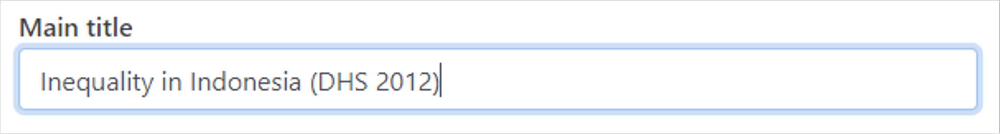 |
| Checkbox | Limit the view, e.g. to the most recent date, or include information, such as 95% confidence intervals. 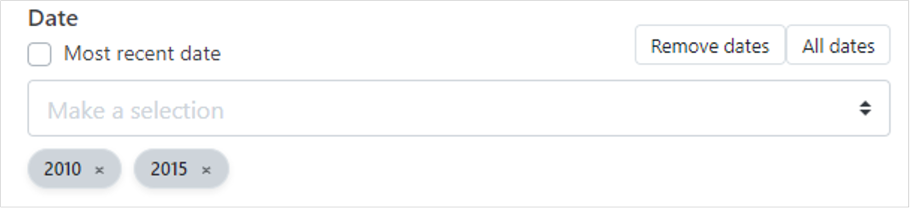 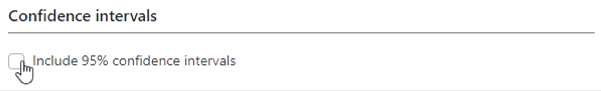 Check the box to limit the view to the most recent year or include 95% confidence intervals. 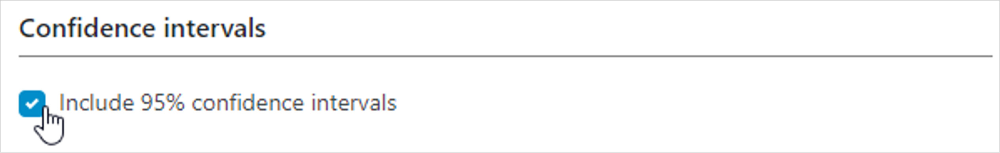 |
| Radio button | Choose between different options, such as the sort order of your data. 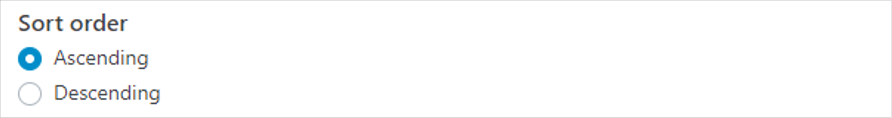 Click the sort order of your choice to rearrange data in ascending or descending order. 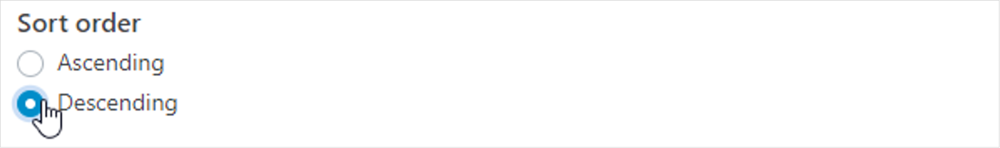 |
| Switch button | Switch an item on or off, such as reference lines in graphs.  Click the switch to display setting average and/or median lines. 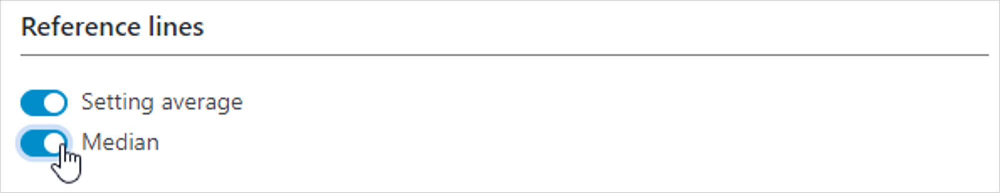 |
| Toggle button | Toggle between different options, such as the file type for graph downloads. 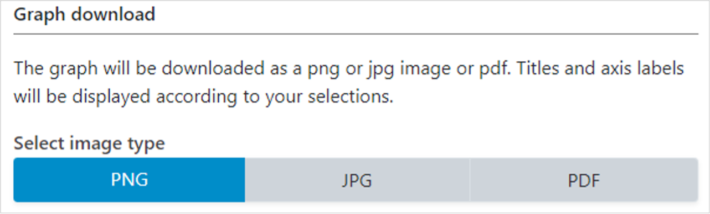 Select the file type of your choice by clicking the relevant button. 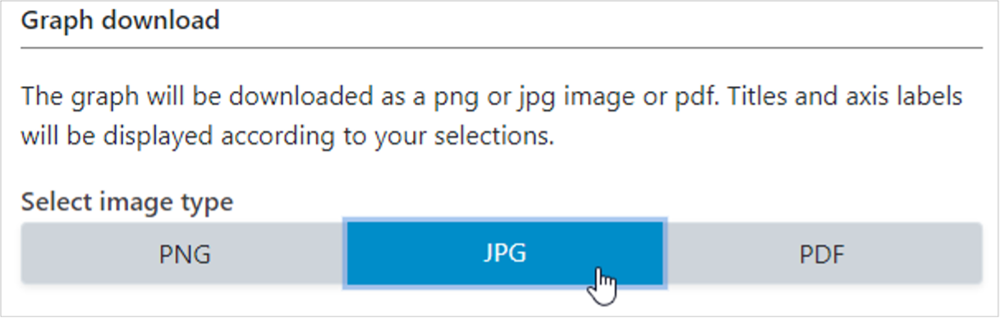 |
| Action button | Launch actions, such as the download of your graph. Click the button to start the graph download. |
Selection menu
The selection menu on the left of each view allows you to customize the results displayed in the visual. The selection menu comprises three or four tabs, depending on the view you are looking at.
- Selection Select the data displayed in the visual, including your setting of interest, data source(s), date(s), indicator(s), inequality dimension(s) and summary measure(s), if applicable.
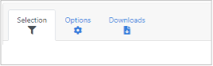
- Options Use different options to modify your visual, such as selecting axis ranges and adding titles. The options that are available vary from view to view, depending on what data and visualization type you are looking at.
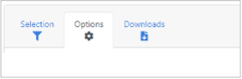
- Downloads Download the results displayed in the visual, including the graph (as png or jpg images or pdf) and/or the data (as comma or tab separated text files). Note that in table views, you are only able to download the data (i.e. no graph).
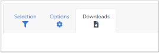
- Summary measures See specific summary measure calculations. Note that this tab is only available under the ‘Explore inequality’ component for ‘Disaggregated data’ displayed in ‘Horizontal bar graphs’. Specific difference and ratio measures are calculated for inequality dimensions with more than 30 population subgroups (such as subnational regions in some countries).
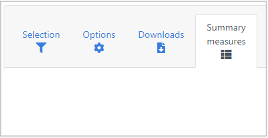
- Benchmarks Choose the comparison settings for benchmarking. This tab is only available in views under the ‘Compare inequality’ component of the tool.
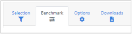
Each tab of the selection menu comprises multiple selectors that allow you to modify the data displayed in the visual. To facilitate navigation, the different selector types are described in Table 2.
Table 2 Selector types